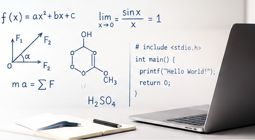

Nachhilfe in Leipzig und online
Wissen wird leichter, wenn Zusammenhänge sichtbar werden.
Bei easyIT geht es nicht um kurzfristiges Auswendiglernen. Gemeinsam schließen wir Wissenslücken, entwickeln tragfähige Lösungswege und bauen die Sicherheit auf, neue Aufgaben selbstständig zu bewältigen.

Warum gerade easyIT?
Persönliche Nachhilfe statt Unterricht nach Schema F
Jeder Lernweg ist anders. Deshalb richte ich Inhalt, Tempo und Erklärungsweise an den tatsächlichen Voraussetzungen aus. Fehler werden nicht bewertet, sondern als Hinweise genutzt. Fragen sind ausdrücklich erwünscht, anschauliche Beispiele machen Abstraktes greifbar und digitale Werkzeuge werden dort eingesetzt, wo sie wirklich helfen.
- Individuelle Betreuung und ehrliche Zielsetzung
- Verständliche Erklärungen mit Bildern und Alltagsbezug
- Nachhaltiger Aufbau von Grundlagen und Selbstständigkeit

Fächer
Vier Fachgebiete – ein gemeinsamer Lernansatz
 Mathematik
Mathematik Physik
Physik Chemie
Chemie Informatik
InformatikHäufig gefragt
Die wichtigsten Antworten vor dem Start
Ist das Erstgespräch kostenlos?
Ja. Im Erstgespräch klären wir Bedarf, Ziele, organisatorische Fragen und ob die Zusammenarbeit fachlich und persönlich passt.
Wie lange dauert eine Unterrichtseinheit?
Die Dauer richtet sich nach Alter, Konzentrationsspanne und Aufgabenstellung. Häufig sind 60 oder 90 Minuten sinnvoll.
Einzel- oder Gruppenunterricht?
Der Schwerpunkt liegt auf individueller Betreuung. Kleine Gruppen sind möglich, wenn Lernstand und Ziele zusammenpassen.
Werden Hausaufgaben einfach gelöst?
Nein. Wir nutzen Hausaufgaben, um Denkwege zu verstehen und Strategien zu entwickeln, die später selbstständig funktionieren.
Wie schnell sind Verbesserungen sichtbar?
Erste Sicherheit kann rasch entstehen. Nachhaltige Verbesserungen benötigen jedoch regelmäßige Mitarbeit und realistische Zeit.
Ist Online-Nachhilfe möglich?
Ja. Online-Unterricht ist mit digitalem Whiteboard, Bildschirmfreigabe und gemeinsam bearbeiteten Materialien möglich.
Der nächste Schritt beginnt mit einem Gespräch.
Schildern Sie kurz das Fach, die Klassenstufe und das aktuelle Ziel.
Kontakt aufnehmen